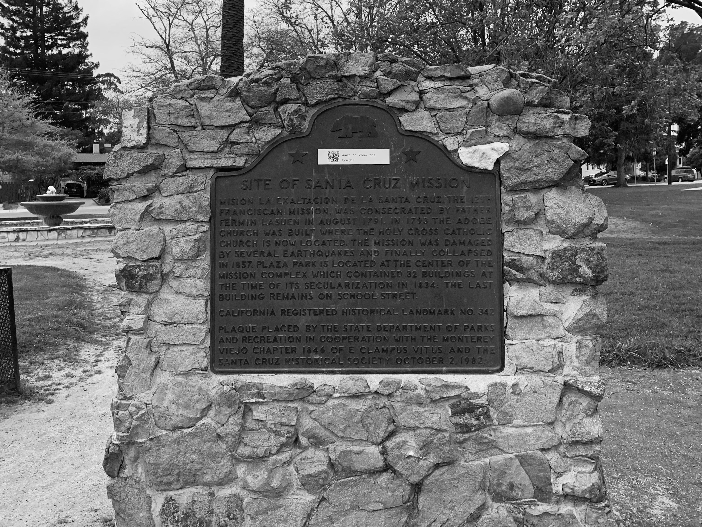
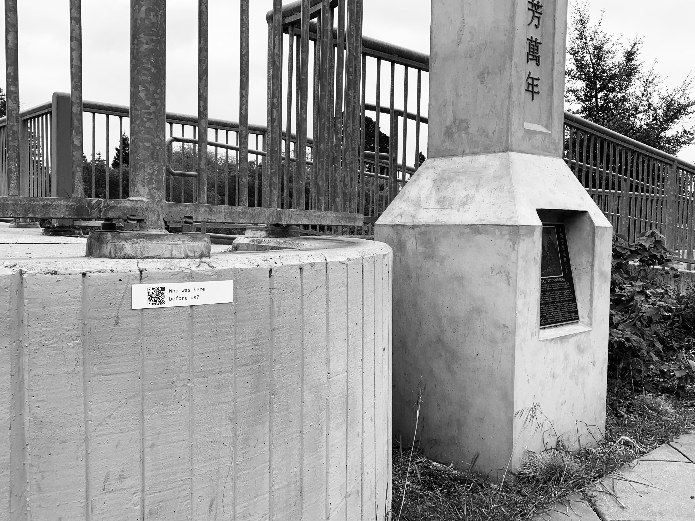
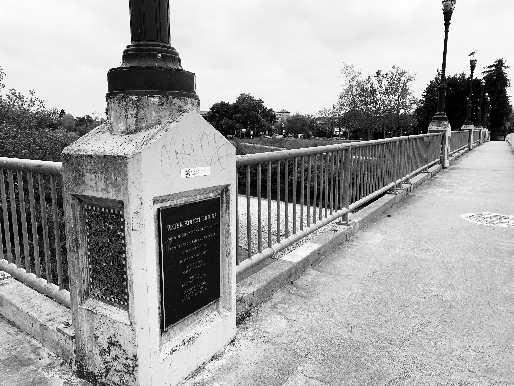
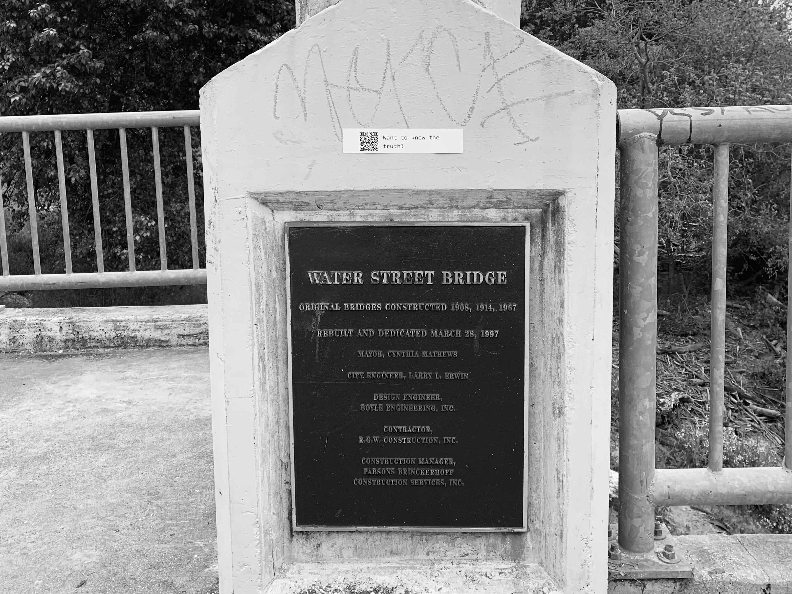

Project 1: Re-membering the Unseen - Santa Cruz Shadows and the Ghosts of Settler Colonialism
How I did it.
Here are some images from the project.
1 / 11
Made and printed QR Codes
2 / 11

Mission
3 / 11

Mission
4 / 11

Cemetery
5 / 11
Chinatown
6 / 11

Chinatown
7 / 11

Water St Bridge
8 / 11

Water St Bridge
9 / 11
Pacific Ave
10 / 11
Pacific Ave
11 / 11

Pacific Ave
Click the links below to read true stories that have happened at the location you are standing on.